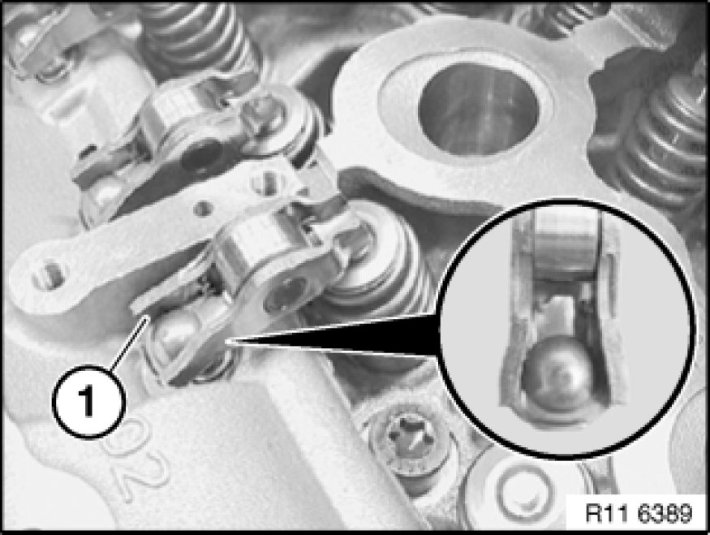
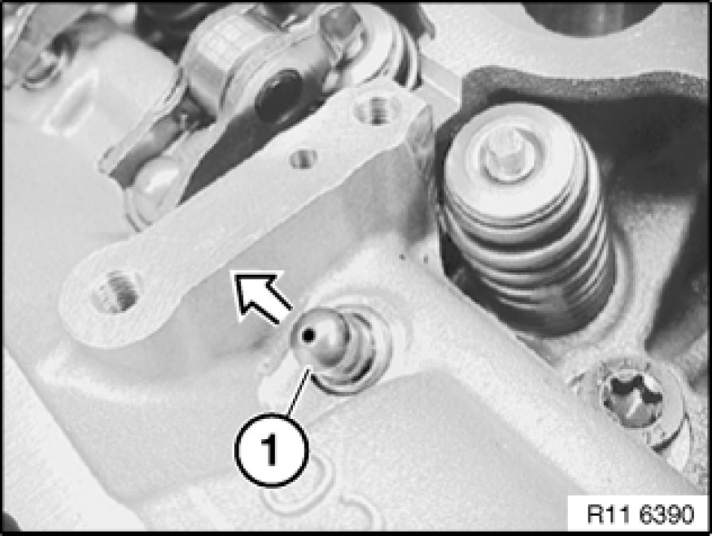

Rocker Arm Assembly: Service and Repair
11 33 050 - Removing and installing/replacing all cam followers (N52K)

Special tools required:
- 11 4 480 11 4 480 Oddments Tray

Necessary preliminary tasks:
- Remove cylinder head cover Service and Repair
- Remove intermediate lever Removing and Installing/Replacing Intermediate Levers
- Remove exhaust camshaft Removing and Installing/Replacing Exhaust Camshaft.

Important!
Rocker arms (1) are divided into bearing categories.
The tolerance classes are marked according to the picture in numbers from 1 to 5.
Already used rocker arms (1) may only be reused in the same position.
Detach cam followers (1) from HVCA element and remove.
Set down all cam followers (1) in neat order in special tool 11 4 480.
Installation:
Before installing exhaust camshaft or intermediate levers, make sure cam followers (1) are correctly seated.

Remove HVCA element (1) in direction of arrow.
Installation:
If the HVCA elements (1) are reused, they must be placed together with the cam followers in neat order in special tool 11 4 480.

Assemble engine.
Check function of DME; if necessary, readjust uniform mixture distribution.